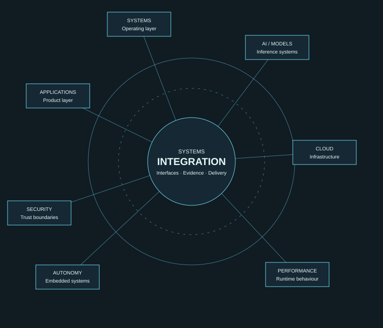

Build
Software and intelligent applications shaped around real workflows.
Independent Software Vendor & Technology Partner
Building, integrating, and improving software systems across AI, cloud, security, and advanced computing to help organizations turn complex challenges into practical technology solutions.
AI & INTELLIGENT SYSTEMS · CLOUD · SOFTWARE ENGINEERING · SECURITY · PERFORMANCE · AUTONOMY

CONNECTED BY DESIGN
Engineering across systems
01 / Business value
Useful engineering connects business intent with systems that can be understood, integrated, validated, and improved. Engagements start with the problem—not a predetermined tool.
Software and intelligent applications shaped around real workflows.
Systems, services, and technology platforms through clear interfaces.
Investigate computing efficiency, latency, reliability, and performance.
Design digital infrastructure with explicit trust boundaries and secure defaults.
Test emerging technologies through focused research and prototypes.
Move from requirements to implementation with validation at each step.
02 / Connected technology
Applications depend on runtimes, operating systems, cloud infrastructure, security controls, and hardware. Good engineering considers the connections between those layers.
Application development, AI-assisted workflows, APIs, integration, and automation.
Deployment patterns, platform engineering, reliability, observability, and operations.
Threat-aware design, profiling, optimization, and resilience.
Start a conversation
Discuss your requirements, technical direction, or potential collaboration.
Get in touch ↗